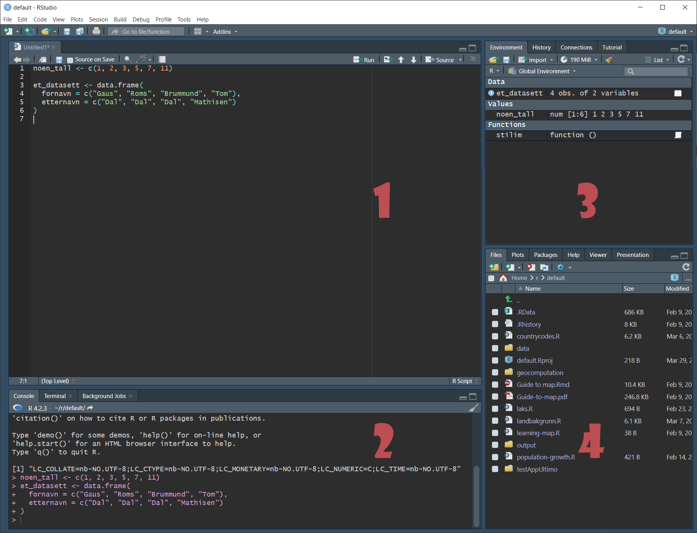

Vi starter gradvis på bunnen og arbeider oss kjapt opp til den avanserte arbeidsflyten vi er vant med. Det vil si at vi starter med enkle lister og datasett. Så forlater vi dette og jobber kun med datasett.
# Laster inn tidyverse, som vi alltid brukerlibrary(tidyverse)
Men først av alt bør vi ta en titt på Rstudio. Dette er som nevnt det grafiske brukergrensesnittet som vi arbeider i når vi jobber med R. Et typisk Rstudio-vindu kan se slik ut:

Rstudio in action, med tema Tomorrow Night 80s
Hvis du har kjedeligere farger er det nok fordi du ikke har oppdaga de flotte temaene som du kan velge mellom i Rstudio. Kikk på Tools/Global options/Appearance og endre Editor theme til noe som faller deg i smak. Min favoritt for tida er Tomorrow Night 80s. Grensesnittet består av fire ruter (panes), som hver kan ha flere faner (tabs).
Når du først er i innstillinger: Skru av Restore .RData into workspace on startup og velg never på Save workspace to .RData on exit. Dette er innstillinger som gjør det litt raskere for deg å komme inn i et prosjekt, men som vil gi deg en falsk trygghet, og som inviterer til noen av de feilene om jeg omtaler i Chapter 12. Derfor skrur vi dem av.1
Slik skal det se ut
4.1.1 Rute 1: Kilde (source)
I denne ruta havner alle skriptene våre. Vi skriver alle kommandoene våre i skript som vi deretter kjører. Dette er likt hvordan syntaks/skript kan brukes i Stata og SPSS. Disse skripta blir en oppskrift for oss seinere som forteller oss hva som blei gjort. Du kan kjøre ei og ei linje ved å trykke ctrl + enter2, eller du kan markere det du vil kjøre og trykke det samme. Du kan kjøre hele skriptet ved å trykke ctrl + alt + enter. Skript lar deg enkelt dele arbeidet ditt med andre. Du bør være flink på å dokumentere det du gjør ved å bruke kommentarer. Dette er linjer som starter med #. Disse linjene vil ignoreres av R når du kjører skriptet.
Du kan se at jeg har skrevet noe kode i skriptet mitt. Jeg lager en vektor som heter noen_tall og et datasett som heter et_datasett.
4.1.2 Rute 2: Konsollen (console)
Man kan også skrive kommandoer rett til konsollen. Da blir de kjørt med en gang man trykker enter. De kodene du skriver til konsollen vil ikke bli lagra noe sted, så hvis du jobber mye her vil du ikke dokumentere arbeidet ditt. Så ikke gjør det til en vane å bruke konsollen mye. Den er nyttig hvis du veit at du ikke trenger å ta vare på akkurat det du gjør nå. F.eks. hvis du skal regne ut noe fort, eller printe et objekt for å inspisere det.
Når du kjører skript vil koden skrives ut til konsollen. Du kan se at jeg har kjørt kodene i skriptet fordi de er blitt skrevet til konsollen.
4.1.3 Rute 3: Miljøet (environment) med mer
De to siste rutene kan inneholde diverse faner, avhengig av hva du krysser av for i Pane layout i global options. Vanligvis viser det oss miljøet vårt. Her finner du en oversikt over alle objektene du har laga hittil i sesjonen (session) din. En sesjon starter når du starter R (som starter når du starter Rstudio). Den varer til du skrur av R eller restarter den manuelt. Du restarter den manuelt ved å gå til Session/Restart R eller trykke ctrl + shift + F10.
Du kan se at det ligger en vektor, et datasett og en funksjon (stilim()) i mijøet mitt. De to første er det jeg lagde i skriptet. Da koden blei kjørt lagde de to objekter (et datasett og en vektor), og alle objekter legges i miljøet. Funksjonen ligger der fordi den er definert i min .Rprofile. Dette går jeg ikke inn på her, for det er et mer avansert tema. Det holder å si at denne funksjonen blir lasta inn i miljøet mitt hver gang jeg starter en R-sesjon.
Det er andre faner i denne ruta som kan være nyttig, men vi trenger ikke bry oss om dem nå. Kort fortalt viser History oss hvilke koder vi nettopp har kjørt, og Git kan brukes hvis vi bruker Git som et version control system.
4.1.4 Rute 4: Filer, plott, visning, hjelp med mer
Her ligger det flere faner som er interessant for oss.
4.1.4.1 Files
Vanligvis ser vi filene i den mappa vi befinner oss her, hvis fana Files er valgt. Her ligger alle filene jeg har i min mappe for øyeblikket. Det er noe rotete. Herfra kan du enkelt åpne andre skript.
4.1.4.2 Plots
Hvis du lager en figur eller graf vil plottet kunne vises her.
4.1.4.3 Help
Lær å like Help. Her kan du søke opp funksjoner for å få hjelp til å bruke dem. Du kan enten bruke søkefeltet i høyre hjørne av fana, eller kjøre denne koden ?funksjonsnavn. F.eks.
?mutate
Da vil hjelpevinduet dukke opp.
4.1.4.4 Viewer
Viewer lar oss forhåndsvise f.eks. html-sider, Shiny-apps og andre dokumenter vi produserer.
4.2 Filer vi bruker i R
4.2.1 .R
Den viktigste filtypen å vite om er R-skript. Disse filene ender i .R. Når du arbeider, arbeider du hovedsaklig i .R. Du skriver koder, og kan kjøre hele eller deler av skriptet. Du kan legge inn kommentarer ved bruk av #. Hold skripta dine ryddig og du vil takke deg sjøl seinere.
4.2.2 .rmd
Noen ganger vil du skrive mye, og legge inn koder her og der. F.eks. hvis du vil lage en lærebok, unnskyld, en lærepamflett, i R. Siden du skal skrive så mye er det strevsomt å skulle legge inn kommentarer overalt. Da bruker vi istedenfor et Rmarkdown-dokument. Disse har forkortelsen .Rmd3. Rmarkdown er en avvart av vanlig markdown-dokumenter. Markdown er en genial oppfinnelse, som lar deg skrive enkle dokumenter med enkle formateringer kjapt. Her er en grei intro til markdown. Rmarkdown baserer seg på de samme prinsippene, men har noe utvida funksjonalitet til å fungere med R og Rstudio. Når du vil kjøre kode lager du en kodeblokk, og skriver koden inn der. Dette lar deg kombinere tekst, kode, figurer og tabeller på en kraftig måte. Du slipper den evige dansen mellom et statistikkprogram, klipp og lim, og Word. Alt skrives samtidig, og du strikker sammen dokumentet med pakka knitr. Outputen blir enten en .html-fil som kan leses i nettleseren eller en .pdf-fil.
4.2.3 .qmd
Selskapet formerly known as Rstudio, Posit, gjorde nylig en rebranding fra å fokusere på hovedsaklig R til å fokusere på flere programmeringsspråk. I den anledning lagde de en “ny versjon” av Rmarkdown som var mer kompatibel med disse språka. Resultatet blei en “oppdatert” versjon av rmarkdown som heter quarto. Alt jeg har sagt om Rmarkdown gjelder for quarto også. Ærlig talt er det ikke så lett å få tak i hva som er annerledes med de to. I arbeidet med denne pamfletten begynte jeg å bruke quarto istedenfor rmarkdown. Her er en intro til quarto.
{width = 70%} ### .Rporj
Dette er et R-prosjekt. Du bør organisere arbeidet ditt i prosjekter. Vi prater mer om dette i (arbeidsprosess?).
4.3 Vektor
Det grunnleggende elementet i R er en vektor. En vektor kan forstås som en liste av elementer med samme type. Vi kan ha vektorer av tall, bokstaver, faktorer. De tre siste er eksempler på klasser. Det er noen forskjellige klasser, men vi bryr oss mest om disse tre.
La oss lage en vektor
c(1, 2, 3)
[1] 1 2 3
Funksjonen c() kombinerer verdier til en vektor.
Når vi skriver en kommando vil R alltid returnere noe til oss. Det blir vanligvis printa til skjermen. Hvis vi heller vi lagre det som et objekt som vi kan henvise til seinere, bruker vi assignment for å gi verdien(e) til et objekt vi navngir.
Slik:
vektor1 <-c(1, 2, 3)vektor1
[1] 1 2 3
Note
Når man gir en verdi bruker man en av to operatorer: enten <- eller =. Det er generelt ansett at man bør bruke pila istedenfor likhetstegn. Årsakene er
= (assignment) er lett å forveksle med == (comparison). Det er enklere å unngå dette med pila
pila er anvendelig. Du kan faktisk skrive den motsatt vei, slik: c(1, 2, 3) -> vektor1. Når det er sagt, lov meg at du aldri gjør dette med mindre du har en utrolig god grunn. Enkelte konvensjoner er smart å beholde.
Derfor bruker jeg alltid <-, og anbefaler deg det også.
Tall kan man, som vi ser, bare skrive rett ut. Bokstaver, derimot, må deklareres som en streng. Dette gjøres ved å omkranse dem i hermetegn:
vektor2 <-c("A", "B", "C")vektor2
[1] "A" "B" "C"
En vektor som består av bokstaver eller ord kalles en character vector eller en string.
Vi kommer oss langt med numeriske vektorer og strengvektorer. Her er det verdt å merke at det er forskjellige varianter av numeriske vektorer: De kan være Int, double, eller float. Forskjellen er sjelden viktig for oss, så jeg går ikke inn på det.
Mer inngående info om vektorer og klasser kan finnes her.
En vektor kan bestå av alt fra ett til mange elementer. Men den kan bare bestå av elementer av samme klasse
La oss se kjapt på andre typer dataverdier vi kan arbeide med.
4.3.1 Datoer
Datoer er spesielle verdier i R. Dette lar oss gjøre spesielle ting som å regne ut tidsdifferansen mellom to datoer i dager, måneder eller år, og mange andre nyttige ting. Pakka lubridate inneholder mange nyttige funksjoner som utvider de som ligger i base R. Er lubridate en del av tidyverse? Så klart.
4.3.2 Logiske verdier
Det er også verdt å være oppmerksom på logiske vektorer. Elementer i disse vektorene kan kun være entenTRUE (sann) eller FALSE (usann). De brukes mye i filtrering og testing.
4.3.3 Missing (NA)
Det siste typen element vi må huske på er missing. Alle dataprogrammer har ulik måte å lagre såkalte missing data på. I R vises de som NA. Det er masse vi kunne sagt om NA, mer enn jeg rekker her. Jeg nevner kjapt: En del funksjoner, spesielt i base R liker ikke missing. Blant annet sum(). Den vil gi NA som svar dersom det er missing tilstede i datasettet, hvilket aldri er det vi forventer oss. Disse funksjonene har alltid mulighet til å ignorere missing ved å sette et spesielt argument. F.eks. na.rm = TRUE
# En tilfeldig vektor med missingfoo <-c(1, 2, 3, NA)# Forventer 6, får NA.sum(foo)
[1] NA
# Slik ber vi sum ignorere missing.sum(foo, na.rm =TRUE)
[1] 6
Når vi importerer filer fra andre programmer hender det vi får med oss deres definisjon av missing. F.eks. er missing noen ganger koda som -999 i SPSS-filer. Her kan det skje feil slik at disse verdiene blir til 999 i R. Det skjer sjelden, men det er verdt å være oppmerksom på muligheten for at det skjer.
4.3.4 Faktor
Faktorer (factors) må også nevnes. Disse er nyttige for grupperinger, og noen funksjoner kan merke seg hvilke variabler som er faktorer og utføre heuristikker basert på det. Sjøl syns jeg faktorer er knotete å forholde seg til, så jeg foretrekker å bare bruke strengvektorer.
4.4 Liste
En liste er som en vektor på steroider. Den kan består av elementer av ulik klasse. I tillegg kan en liste bestå av andre lister. Det gjør dem kraftig, og anvendbar.
# En liste bestående av fem tall. Dette kunne like gjerne vært en vektorliste1 <-list(1, 2, 3, 4, 5)liste1
Vi får direkte tilgang på elementene av objekter ved å bruke firkantklammer ([], a.k.a. hakeparentes, square brackets, box brackets). Da bruker vi indeksen til elementet for å henvise til det. Indeksen er rekkefølga til elementet. R er 1-indeksert. Det vil si at indeksen starter på 1. Andre programmeringsspråk, slik som Python, starter på 0. Seinere skal vi se at det går an å henvise til elementer ut fra navna deres, men det tar vi når vi kommer til det.
# Hva er det første elementet i vektor1?vektor1[1]
[1] 1
# Hva er det andre elementet i liste2?liste2[2]
$vektorB
[1] "ET" "IJ" "SW"
Spesielt når vi holder på med lister er det verdt å vite om dobbel firkantklammer ([[]]). Vanlige firkantklammer gir deg ei liste med element(ene) på denne indeksen. Doble firkantklammer gir deg sjølve element(ene) på denne indeksen. Du kan se forskjellen her:
# Sjølve det som blir returnert.liste2[2]
$vektorB
[1] "ET" "IJ" "SW"
liste2[[2]]
[1] "ET" "IJ" "SW"
# Det blir tydeligere om vi undersøker klassen til objektene som blir returnertliste2[2] %>%class() # liste
[1] "list"
liste2[[2]] %>%class() # character (alstå en tekstvektor)
[1] "character"
Vi bruker ikke så ofte lister direkte, men de er viktige av årsaker som straks blir klart. Det siste jeg vil påpeke om lister er at de er rekursive, det vil si at du kan ha ei liste som et element av ei liste. Dermed følger det at vi kan ha ei liste som er et element av ei liste som er et element av ei liste som …
Og så videre
5 Data frame
Vi arbeider mest med datasett, og disse har en egen klasse i R, nemlig data frame. Jeg kommer ikke på noen god norsk oversettelse av data frame, så jeg bruker det engelske ordet. Dette fordi jeg på engelsk ville skilt mellom datasets, altså et datasett som kunne finnes i ulike dataformater (.sav, .csv, .xlsx) og data frames, altså en datastruktur i R.
# En enkel data frame.dat1 <-data.frame(personer =c("Luke", "Han", "Darth"),moral =c("Bra", "Nja", "Dårlig"))dat1
personer moral
1 Luke Bra
2 Han Nja
3 Darth Dårlig
# Vi kan lage et data frame via vektorer som er predefinerte,# så lenge begge har lik lengde.dat2 <-data.frame(colA = vektor1,colB = vektor2)dat2
colA colB
1 1 A
2 2 B
3 3 C
Det interessante med data frames er at de faktisk bare er lister. Det vil si at mye av det vi veit om lister kan brukes på data frames. Et data frame er strengt tatt bare ei liste med vektorer. Hver vektor blir en kolonne i data framen. Hva representerer hver rad? Det er ikke gitt, men vi kan vanligvis tenke på hver rad som en observasjon. Når vi prater om tidy data vil dette bli utdypa.
# Sjekk ut første element av dat1dat1[1]
personer
1 Luke
2 Han
3 Darth
Det er noen begrensninger eller krav ved datasett: hver kolonne må ha lik lengde. Hvis ikke får du feilmelding.
Error in data.frame(colA = c(1, 2, 3, 4), colB = c(5, 6, 7)): arguments imply differing number of rows: 4, 3
R er snill og gir oss tydelig beskjed om hva som er galt i feilmeldinga.
En ting som er fint med alle disse R-pakkene, er at de ofte inkluderer datasett som vi kan bruke for å illustrere pakkens funksjoner. Disse datasetta ligger tilgjengelig på samme måte som funksjonene: man bare skriver navnet dens for å påkalle den. La oss hente et datasett som kommer fra dplyr (som er en del av tidyverse).
starwars
# A tibble: 87 × 14
name height mass hair_…¹ skin_…² eye_c…³ birth…⁴ sex gender homew…⁵
<chr> <int> <dbl> <chr> <chr> <chr> <dbl> <chr> <chr> <chr>
1 Luke Skywa… 172 77 blond fair blue 19 male mascu… Tatooi…
2 C-3PO 167 75 <NA> gold yellow 112 none mascu… Tatooi…
3 R2-D2 96 32 <NA> white,… red 33 none mascu… Naboo
4 Darth Vader 202 136 none white yellow 41.9 male mascu… Tatooi…
5 Leia Organa 150 49 brown light brown 19 fema… femin… Aldera…
6 Owen Lars 178 120 brown,… light blue 52 male mascu… Tatooi…
7 Beru White… 165 75 brown light blue 47 fema… femin… Tatooi…
8 R5-D4 97 32 <NA> white,… red NA none mascu… Tatooi…
9 Biggs Dark… 183 84 black light brown 24 male mascu… Tatooi…
10 Obi-Wan Ke… 182 77 auburn… fair blue-g… 57 male mascu… Stewjon
# … with 77 more rows, 4 more variables: species <chr>, films <list>,
# vehicles <list>, starships <list>, and abbreviated variable names
# ¹hair_color, ²skin_color, ³eye_color, ⁴birth_year, ⁵homeworld
Det kan føles rart å jobbe med data som vi ikke veit hvor ligger. Så jeg kan plassere det explisitt i miljøet vårt (environment), ved å assigne det.
# Hvis du kjører denne koden vil du se at et objekt ved navn `starwars` dukker # opp i det globale miljøet i vinduet til høyre.starwars <- starwars
La oss bruke dette datasettet for å vise noen flere egenskaper ved R. Men vent, er dette et data frame?
starwars %>%class()
[1] "tbl_df" "tbl" "data.frame"
5.0.1 Tibble
Som vi ser av sjekken over, har starwars tre klasser, hvor én av dem er en data.frame. Til sammenlikning har de data framene vi lagde tidligere bare én klasse:
dat1 %>%class()
[1] "data.frame"
Så hva er en tibble? Kort fortalt er en tibble en forbedra versjon av et data frame. Tibbles kommer fra pakka tibble som, du gjetta riktig, er en del av tidyverse. En fordel med tibbles er at de printer bedre til konsollen. Spesielt store datasett (vår spesialitet) blir mer leselig i tibbles. Når vi arbeider med tidyverse vil mange av data framene våre bli til tibbles via funksjonene deres. Vi trenger altså sjelden tenke mye på dette. Tibbles arver også klassen data.frame som vi så over, så de fleste funksjoner som ikke har hørt om tibbles vil også funke på dem. Flere fordeler forklares i dokumentasjonen til pakka.
For å oppsummere: du trenger sjelden bry deg om du jobber med tibbles eller data frames. Jeg nevner det her fordi du kanskje vil lure på hvorfor vi noen får tibble-objekter.
5.1 Tilbake til elementer
Nå som vi har tilgang til et større datasett kan vi utforske litt mer hvordan vi arbeider med, nettopp, større datasett. Datasettet starwars inneholder informasjon om dokumentarserien Star Wars, som omhandla livet i gamle dager, i en galakse langt, langt vekk.
starwars
# A tibble: 87 × 14
name height mass hair_…¹ skin_…² eye_c…³ birth…⁴ sex gender homew…⁵
<chr> <int> <dbl> <chr> <chr> <chr> <dbl> <chr> <chr> <chr>
1 Luke Skywa… 172 77 blond fair blue 19 male mascu… Tatooi…
2 C-3PO 167 75 <NA> gold yellow 112 none mascu… Tatooi…
3 R2-D2 96 32 <NA> white,… red 33 none mascu… Naboo
4 Darth Vader 202 136 none white yellow 41.9 male mascu… Tatooi…
5 Leia Organa 150 49 brown light brown 19 fema… femin… Aldera…
6 Owen Lars 178 120 brown,… light blue 52 male mascu… Tatooi…
7 Beru White… 165 75 brown light blue 47 fema… femin… Tatooi…
8 R5-D4 97 32 <NA> white,… red NA none mascu… Tatooi…
9 Biggs Dark… 183 84 black light brown 24 male mascu… Tatooi…
10 Obi-Wan Ke… 182 77 auburn… fair blue-g… 57 male mascu… Stewjon
# … with 77 more rows, 4 more variables: species <chr>, films <list>,
# vehicles <list>, starships <list>, and abbreviated variable names
# ¹hair_color, ²skin_color, ³eye_color, ⁴birth_year, ⁵homeworld
På tide å utforske. Vi kan henvise til spesifikke celler via x- og y-koordinater.
# Vi kan finne en nøyaktig celle ved å henvise til x- og y-koordinatenestarwars[2, 1]
# A tibble: 1 × 1
name
<chr>
1 C-3PO
starwars[5, 4]
# A tibble: 1 × 1
hair_color
<chr>
1 brown
# Vi kan få tak i en serie med elementer via `:`starwars[1:3]
# A tibble: 87 × 3
name height mass
<chr> <int> <dbl>
1 Luke Skywalker 172 77
2 C-3PO 167 75
3 R2-D2 96 32
4 Darth Vader 202 136
5 Leia Organa 150 49
6 Owen Lars 178 120
7 Beru Whitesun lars 165 75
8 R5-D4 97 32
9 Biggs Darklighter 183 84
10 Obi-Wan Kenobi 182 77
# … with 77 more rows
# Vi kan gjøre et utvalg av celler ved å definere både x og y som en seriestarwars[2:5, 6:9]
# A tibble: 4 × 4
eye_color birth_year sex gender
<chr> <dbl> <chr> <chr>
1 yellow 112 none masculine
2 red 33 none masculine
3 yellow 41.9 male masculine
4 brown 19 female feminine
Det er upraktisk å skulle huske indekser til alt. Heldigvis kan vi henvise til kolonner dersom de er navngitt, slik som her:
starwars["eye_color"]
# A tibble: 87 × 1
eye_color
<chr>
1 blue
2 yellow
3 red
4 yellow
5 brown
6 blue
7 blue
8 red
9 brown
10 blue-gray
# … with 77 more rows
# En nyttig funksjon for å finne navna til alle kolonnene (variablene) er:colnames(starwars)
Som du begynner å skjønne er det flere veier til Rom. Klammeparantesen og $ har tildels overlappende funksjoner. De har likevel sine unike bruksområder. De vil vi lære å anerkjenne etter hvert som vi arbeider med dem. En nyttig ting med [] er at vi kan bruke det som et enkelt filter.
# Velg kun de karakterene som er menneskestarwars[starwars$species =="Human", ]
# A tibble: 39 × 14
name height mass hair_…¹ skin_…² eye_c…³ birth…⁴ sex gender homew…⁵
<chr> <int> <dbl> <chr> <chr> <chr> <dbl> <chr> <chr> <chr>
1 Luke Skywa… 172 77 blond fair blue 19 male mascu… Tatooi…
2 Darth Vader 202 136 none white yellow 41.9 male mascu… Tatooi…
3 Leia Organa 150 49 brown light brown 19 fema… femin… Aldera…
4 Owen Lars 178 120 brown,… light blue 52 male mascu… Tatooi…
5 Beru White… 165 75 brown light blue 47 fema… femin… Tatooi…
6 Biggs Dark… 183 84 black light brown 24 male mascu… Tatooi…
7 Obi-Wan Ke… 182 77 auburn… fair blue-g… 57 male mascu… Stewjon
8 Anakin Sky… 188 84 blond fair blue 41.9 male mascu… Tatooi…
9 Wilhuff Ta… 180 NA auburn… fair blue 64 male mascu… Eriadu
10 Han Solo 180 80 brown fair brown 29 male mascu… Corell…
# … with 29 more rows, 4 more variables: species <chr>, films <list>,
# vehicles <list>, starships <list>, and abbreviated variable names
# ¹hair_color, ²skin_color, ³eye_color, ⁴birth_year, ⁵homeworld
Dette er noe knotete: Du må gjengi datasettnavnet inni klamma, og du må huske på kommaet for å implisitt velge alle rader. Dessuten vil du bare få treff på nøyaktig det samme. Hvis noen har en species som er skrevet f.eks. human eller human/alien vil vi ikke få treff. Hvis det bare hadde fantes en smartere implementering av dette filteret …
Og det gjør det! I, nettopp, tidyverse!
På tampen, noen nyttige digresjoner.
5.2 Digresjoner
5.2.1 Navngitte lister/vektorer
Vi returnerer til lister og vektorer. Tenk på de vi lagde tidligere:
De er enkle. Kan vi gjøre dem … mer komplisert? Så klart. Noe som ofte vil være nyttig for oss er det å bruke navngitte vektorer eller lister (named vector/named list). Hva er det? Det er en vektor eller liste hvor hvert element har et navn. La oss se noen eksempler. (Jeg viser bare for vektorer, men det samme gjelder for lister.)
navngitt_vektor <-c("navn"="Arnold","hilsen"="hey","venn"="Gerald")# Nå har hvert element i vektoren et navnnavngitt_vektor
navn hilsen venn
"Arnold" "hey" "Gerald"
# Sammenlikn med den tidligere, navnløse vektoren. vektor2
[1] "A" "B" "C"
# Vi kan også bruke funksjonen `setNames()` til å gi navn. Nyttig hvis vi har# navna lagra i en annen vektor/listenavn <-c("Første", "Andre", "Tredje")setNames(vektor2, navn)
Første Andre Tredje
"A" "B" "C"
# Men --- hvor har navna våre blitt av??vektor2
[1] "A" "B" "C"
# Vi må huske å bruke *assignment* for å large det vi gjørvektor2 <-setNames(vektor2, navn)vektor2
Første Andre Tredje
"A" "B" "C"
Hvorfor er det nyttig? Navngitte vektorer og lister er nyttig fordi det er mange funskjoner i spesielt tidyverse som nyttiggjør seg av dem. Når man for eksempel bruker rename() til å endre navn på variabler kan man sende en navngitt vektor for å endre mange navn på en gang. Dette gjør at vi mer programmatisk kan endre navn istedenfor å skrive hvert ledd. Når vi har mange ledd, slik som i navn på plansoner og kommunenummer, blir dette svært nyttig.
Forresten, her er en ting jeg ofte brenner meg på: Når du bruker setNames() kommer elementnavna etter elementene. Når du navngir elementene mens du lager vektoren/lista, kommer elemtnnavna først. Du ser det i eksemplene over.
5.2.2 Assignment (= og <-)
Kanskje dere føler dere lurt av noe jeg så tidligere.
Derfor bruker jeg alltid <-, og anbefaler deg det også.
Og litt lengre ned viser
# En enkel data frame.dat1 <-data.frame(personer =c("Luke", "Han", "Darth"),moral =c("Bra", "Nja", "Dårlig"))dat1
personer moral
1 Luke Bra
2 Han Nja
3 Darth Dårlig
Men her bruker jeg jo = som assignment. Hva skjer?
Poenget her er at jeg bruker = inni funksjonens argumenter. data.frame() er en funksjon, og jeg definerer her hva som skal være kolonnene i datasettet mitt. Så bruker jeg <- til å assigne det som funksjonen data.frame() returnerer. Forvirra? På generelt grunnlag kan vi si at vi bruker = inni funksjoner, og <- utafor4.
Forresten, hvorfor prøver vi ikke bare å bruke <- inni funksjonen og ser hva som skjer?
# Funker ikkedat1x <-data.frame( personer <-c("Luke", "Han", "Darth"), moral <-c("Bra", "Nja", "Dårlig"))dat1
personer moral
1 Luke Bra
2 Han Nja
3 Darth Dårlig
dat1x
personer....c..Luke....Han....Darth.. moral....c..Bra....Nja....Dårlig..
1 Luke Bra
2 Han Nja
3 Darth Dårlig
Hvis vi sammenlikner de to datasetta ser vi at det funker … på en måte. Oppsettet blir likt, men vi mister navnet på kolonnene.
Hvorfor skrur vi av dette? Innstillinga er på by default og vil lagre alt som ligger i miljøet ditt mellom hver gang du jobber i Rstudio, sjøl om du lukker programmet og skrur av maskina. Dette gjør det som nevnt lettere å starte opp igjen. Samtidig fører det til at miljøet ditt blir overfylt av gamle objekter og pakker du har lasta inn. Du kommer til å på et tidspunkt få en feil fordi du har lasta inn en gammel pakke du hadde glemt, eller fordi det ligger et objekt i miljøet du hadde glemt av. Det er god hygiene å restarte sesjonen ofte (flere ganger i løpet av et prosjekt), og denne innstillinga er med på å hindre deg i å gjøre det.↩︎
For macOS-brukere: erstatt ctrl med cmd i disse snarveiene.↩︎
Faktisk finnes det to filtyper for Rmarkdown. Det er forskjell på .Rmd og .Rmarkdown. Akkurat hva denne forskjellen er … er vanskelig å forstå. Yihue gjør et tappert forsøk i blogdown. Hovedpoenget er at forskjellen er så esoterisk at det ikke har noen praktisk betydning for vår del.↩︎
Når vi seinere definerer våre egne funksjoner vil du se at det jeg sier her ikke er helt korrekt, men det er en grei heuristikk fram til da.↩︎

 {width = 70%} ### .Rporj
{width = 70%} ### .Rporj